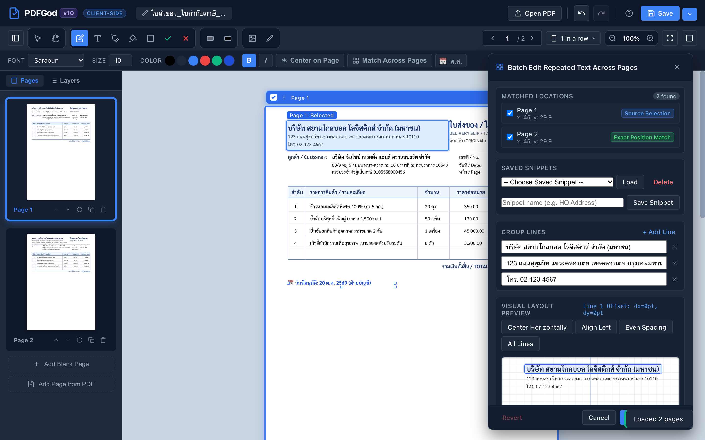

Solving Thai PDF Typography in Browsers: Stacked Tone Marks, Windows-874 PUA & ToUnicode CMaps
Why most browser-based PDF editors corrupt Thai characters during editing or export—and the fontkit, PUA normalizer, and Sarabun TrueType architecture inside PDFGod.
1. Why Thai PDF Editing Breaks in Standard Web Libraries
Writing and modifying English PDF documents in JavaScript is straightforward because Latin characters map cleanly 1-to-1 with PDF's built-in Standard 14 fonts (Helvetica, Times Roman, Courier) using WinAnsi encoding. Thai script (ภาษาไทย), however, violates almost every assumption made by Western PDF libraries:
- Four Vertical Rendering Levels: A single Thai syllable can stack a base consonant (e.g.,
ก), a lower vowel (ุ,ู), an upper vowel (ิ,ี,ึ,ื), and a tone mark above that (่,้,๊,๋). Standard HTML box metrics calibrated for English (line-height: 1.15) slice off the top of tone marks like ไม้โท or ไม้ตรี. - WinAnsi Failure in PDF-Lib: Built-in PDF Standard fonts cannot encode Thai Unicode codepoints (
U+0E00–U+0E7F). Without embedding a full TrueType font and registering@pdf-lib/fontkit, callingdrawText()crashes or skips Thai glyphs entirely. - Legacy Private Use Area (PUA) Glyphs: Older Thai government forms, bank statements, and Crystal Reports generators store Thai vowels and tone marks in the non-standard Windows-874/Macintosh Private Use Area range (
U+F700–U+F71A) rather than standard Unicode. Copying or editing these lines produces garbled symbols unless normalized. - Corrupted Copy-Paste CMaps: Even when TrueType fonts are embedded with Fontkit, complex shaping and decomposed characters can break the PDF's
ToUnicode CMaptable, turning exported PDF text into unreadable boxes when someone copies text out of Adobe Acrobat or Chrome.

2. How PDFGod's Thai Engine Works (Inside js/thai-support.js)
A. Zero-Network Bundled Sarabun Regular & Bold Fonts
Google's Sarabun typeface is the standard official font used by Thai public administration, legal contracts, and corporate billing systems. Rather than relying on Google Fonts CDN requests—which fail completely offline and cannot be embedded into exported PDF binary streams—PDFGod bundles compact base64-encoded Sarabun Regular and Sarabun Bold TrueType byte arrays directly inside thai-support.js.
When any annotation or edited field contains Thai script characters (detected via regex /[\u0E00-\u0E7F]/), PDFGod's export pipeline automatically routes that span through outDoc.embedFont(sarabunBytes) via fontkit instead of falling back to Helvetica.
B. Legacy PUA & Sara Am Decomposition Normalization
When PDFGod extracts original text lines from an existing Thai PDF via PDF.js, our PUA sanitizer converts legacy Private Use Area presentation forms back into canonical Unicode:
- Normalizes legacy shifted tone marks (
\uF705–\uF709,\uF713–\uF717) and descending consonants without tails (ญ\uF70F,ฐ\uF700) back to canonical Thai codepoints. - Recombines decomposed Sara Am pairs (Nikhahit
\u0E4D+ Sara Aa\u0E32) into the canonical\u0E33(ำ) character so search, word selection, and spacing match standard Thai keyboards.
C. Patching PDF-Lib's CustomFontEmbedder ToUnicode CMap
During PDF generation, OpenType shaping substitutions can shift glyph IDs inside embedded TrueType tables. PDFGod patches PDFLib.CustomFontEmbedder in memory to supplement missing glyph entries and write clean Unicode codepoint mappings into the PDF's /ToUnicode stream. As a result, text exported from PDFGod remains 100% searchable and copy-pasteable in Chrome, Preview, and Adobe Reader.
D. Unclipped Box Metrics, Word Segmentation & Buddhist Era Dates
- Dynamic Thai Line-Height: Any text box detected with Thai script automatically switches from
line-height: 1.15to1.45with top/bottom buffer padding andoverflow: visibleso stacked vowels never clip. Intl.Segmenter('th')Word Boundaries: Unlike English, Thai sentences contain no spaces between words. PDFGod leverages the browser's nativeIntl.Segmenter('th', { granularity: 'word' })API so double-clicking a word inside a Thai paragraph selects only that exact word.- One-Click Buddhist Era Date Stamper (
📅 พ.ศ.): Selecting a text field and clicking the Thai date button inserts the current Gregorian year + 543 in official Thai format (e.g.,18 พฤศจิกายน 2569).